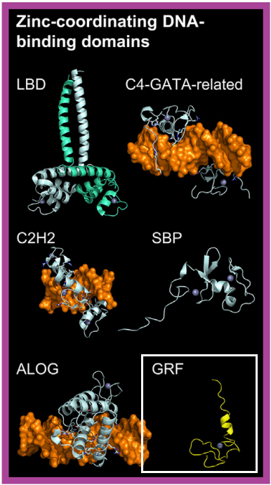

Plants encode zinc finger proteins featuring a motif with three cysteine and one histidine residue (C3H), which defines the C3H zinc finger factors class in TFClass. Unlike their mammalian counterparts, most plant C3H motifs are known to bind RNA rather than DNA.
The only plant C3H transcription factors confirmed to bind DNA are the Growth-Regulating Factors (GRF family). Their putative DNA-binding domain, the WRC domain (named for its conserved tryptophan, arginine, and cysteine residues), contains a conserved C3H motif (CX9CX10CX2H)
[src].
Additionally, the WRC domain plays a role in JMJ28, a negative regulator of immunity in Arabidopsis. It provides target specificity for DNA binding within the RBL/ATX1/2-COMPASS complex
[src].
Until further evidence emerges for other groups of plant C3H proteins, only the GRF family is classified as a transcription factor within the C3H zinc finger factors class of TFClass.
